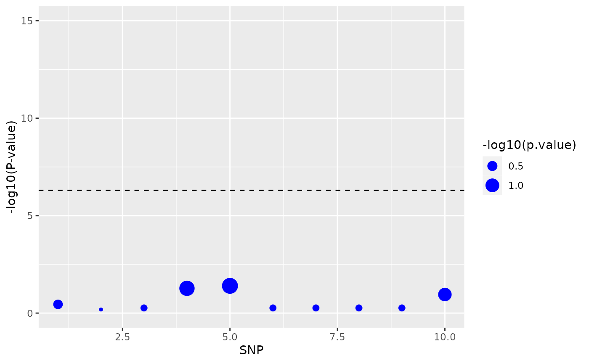
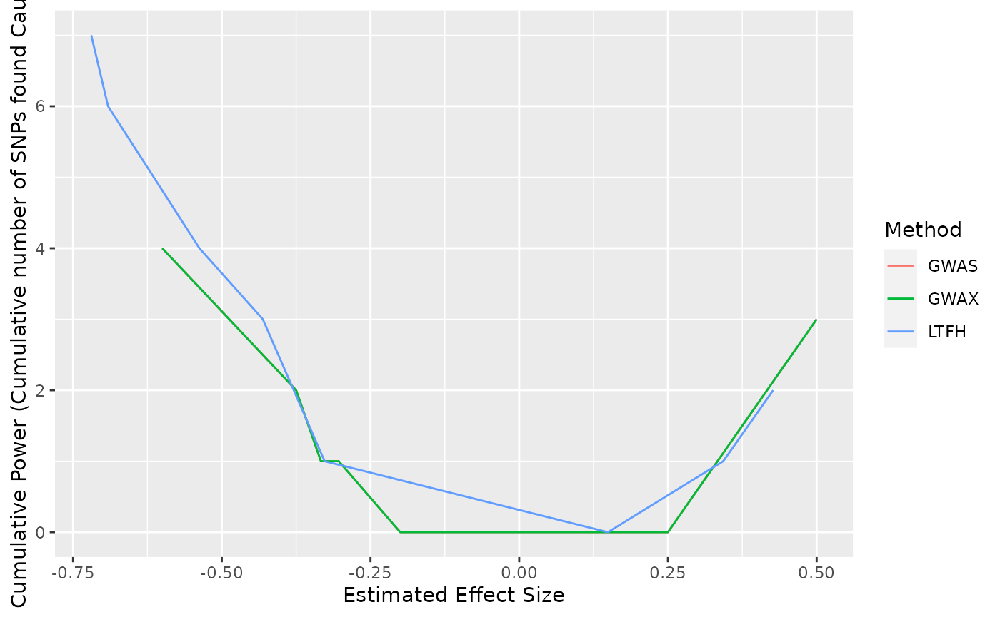

Getting Started with RyouSick
RyouSick.RmdSimulation
To illustrate the use of RyouSick lets go through an example where we try to simulate a disease called bad-knee syndrome in a population.
When trying to simulate genotype and case-control phenotype data using RyouSick you first have to simulate the disease parameters. Disease parameters for our target disorder is simulated on 10 SNPs with a heritability h2 of 0.8 and a prevalence in the population of 0.25:
library("RyouSick")
bad_knee_syndrome <- sim_disease(n_snp = 10, h2 = 0.8, prevalence = 0.25)which outputs
bad_knee_syndrome
#> $MAF
#> [1] 0.40071281 0.22309419 0.04419435 0.42861384 0.46978992 0.15051858
#> [7] 0.15620303 0.11896250 0.07729138 0.20345860
#>
#> $BETA
#> [1] 0.000000 0.000000 0.000000 -0.296382 0.000000 0.000000 0.000000
#> [8] 0.000000 0.000000 0.000000
#>
#> $CAUSAL
#> [1] 0 0 0 1 0 0 0 0 0 0
#>
#> $H2
#> [1] 0.8
#>
#> $PREVALENCE
#> [1] 0.25
#>
#> $N_SNP
#> [1] 10In the above output each MAF value at a given index indicates the frequency at which the genome will vary from the reference. The CAUSAL vector and BETA vector likewise tell us which SNPs are simulated to be causally connected to developing the simulated disease and how big of an effect they have. In the above output we are shown that SNP 4 has been simulated to be causal.
We can now chose what kind of simulation we want to perform for our population. Either with family history or without using one of the two functions:
-
sim_genotypes_no_family()simulates genotype and case-control phenotype without family case-control phenotypes -
sim_genotypes_with_family()simulates genotype and case-control phenotype with family case-control phenotypes
Lets try to do a simulation of 10 genotypes under the bad_knee_syndrome disease parameters with 1 to 3 siblings for each genotype and save it under the filename “bad_knee_data10x10”:
bad_knee_data <- sim_genotypes_with_family(n = 10,
disease = bad_knee_syndrome,
path = "bad_knee_data10x10",
n_sibs = c(1,2,3))The bad_knee_data will now contain a list object, which we will refer to as an rds object, with a reference to a file-backed matrix (matrix stored on disk), a tibble containing information on the disease (MAP) and a tibble containing phenotype information on the genotypes. Individual columns in the data can be accessed using the dollar notation.
bad_knee_data$FAM$Status
#> [,1]
#> [1,] 1
#> [2,] 0
#> [3,] 0
#> [4,] 0
#> [5,] 0
#> [6,] 1
#> [7,] 0
#> [8,] 0
#> [9,] 1
#> [10,] 0Slices of the genotype data can be accessed as well.
bad_knee_data$genotypes[1:10, 1:10]
#> [,1] [,2] [,3] [,4] [,5] [,6] [,7] [,8] [,9] [,10]
#> [1,] 0 2 0 0 0 0 0 0 0 1
#> [2,] 1 0 1 2 0 0 0 1 0 1
#> [3,] 0 0 0 1 1 0 0 1 1 1
#> [4,] 0 1 0 0 1 0 0 1 0 0
#> [5,] 0 1 0 0 0 0 0 1 0 0
#> [6,] 0 0 0 0 0 1 1 0 0 1
#> [7,] 1 1 0 2 1 1 1 0 0 1
#> [8,] 0 0 0 2 1 0 0 0 0 0
#> [9,] 0 0 0 0 0 0 0 1 0 1
#> [10,] 0 0 0 2 1 0 0 0 0 0Here each row represents a genotype and each column a SNP. (WARNING: we highly advise against indexing all the data at once using [ ], as this will try to load the whole file-backed matrix into memory, which, depending on the size of the file, might cause problems)
All of the simulated information contained in our example case bad_knee_data can be seen below.
knitr::kable(bad_knee_data$MAP, align = "ccc")| SNP_ID | MAF | BETA |
|---|---|---|
| 1 | 0.4007128 | 0.000000 |
| 2 | 0.2230942 | 0.000000 |
| 3 | 0.0441943 | 0.000000 |
| 4 | 0.4286138 | -0.296382 |
| 5 | 0.4697899 | 0.000000 |
| 6 | 0.1505186 | 0.000000 |
| 7 | 0.1562030 | 0.000000 |
| 8 | 0.1189625 | 0.000000 |
| 9 | 0.0772914 | 0.000000 |
| 10 | 0.2034586 | 0.000000 |
knitr::kable(bad_knee_data$FAM, align = "ccccccc")| ID | Genetic_Liability | Full_Liability | Status | p1_Status | p2_Status | sibs_Status |
|---|---|---|---|---|---|---|
| 1 | 0.36302377 | 1.0514806 | 1 | 0 | 0 | 1 |
| 2 | -0.48394788 | -1.2211161 | 0 | 0 | 0 | 0, 0, 0 |
| 3 | -0.06046206 | 0.2717148 | 0 | 0 | 0 | 0, 0 |
| 4 | 0.36302377 | 0.6714890 | 0 | 0 | 0 | 1 |
| 5 | 0.36302377 | -0.2015389 | 0 | 0 | 0 | 0, 1 |
| 6 | 0.36302377 | 0.7119287 | 1 | 1 | 0 | 0, 1, 1 |
| 7 | -0.48394788 | -0.6437396 | 0 | 0 | 0 | 0, 0, 0 |
| 8 | -0.48394788 | -0.3891188 | 0 | 0 | 0 | 0 |
| 9 | 0.36302377 | 1.3064947 | 1 | 0 | 0 | 0, 0 |
| 10 | -0.48394788 | -0.2376695 | 0 | 0 | 0 | 0, 1, 1 |
Analysis
We now perform analysis on our simulated data. The RyouSick package contains three methods for analyzing the data:
-
GWAS()Linear regression using genotype data and case-control status
-
GWAX()Linear regression using genotype data and proxy case-control status
-
LTFH()Linear regression using genotype data and posterior mean genetic liabilities
Lets now try each of the methods on our data:
x <- GWAS(rds.obj = bad_knee_data, y = bad_knee_data$FAM$Status)
y <- GWAX(rds.obj = bad_knee_data)
z <- LTFH(rds.obj = bad_knee_data, h2 = 0.8, prevalence = 0.5)Output will consist of estimated effect sizes, standard errors, t-scores and p-values for each SNP, which again can be accessed using dollar notation.
knitr::kable(x)| estim | std.err | score | p.value |
|---|---|---|---|
| -0.3750000 | 0.3827328 | -0.9797959 | 0.3558838 |
| 0.1111111 | 0.2383068 | 0.4662524 | 0.6534672 |
| -0.3333333 | 0.5270463 | -0.6324555 | 0.5447373 |
| -0.3033708 | 0.1341274 | -2.2618111 | 0.0535707 |
| -0.6000000 | 0.2449490 | -2.4494897 | 0.0399685 |
| 0.2500000 | 0.3952847 | 0.6324555 | 0.5447373 |
| 0.2500000 | 0.3952847 | 0.6324555 | 0.5447373 |
| -0.2000000 | 0.3162278 | -0.6324555 | 0.5447373 |
| -0.3333333 | 0.5270463 | -0.6324555 | 0.5447373 |
| 0.5000000 | 0.2795085 | 1.7888544 | 0.1114343 |
Note that to access the analysis data for GWAX and LTFH you have to use method_result$GWAS_Data$.
Statistics for the data can be calculated by passing the p-values, the true causal SNPs and a significance level to the get_stats() function
gwas_stats <- get_stats(pvalues = x$p.value,
true_causal = bad_knee_syndrome$CAUSAL,
a = 0.05)
knitr::kable(gwas_stats)| false_negatives | true_negatives | false_positives | true_positives | total | |
|---|---|---|---|---|---|
| Count | 1.0 | 8.0 | 1.0 | 0 | 10 |
| Frequency | 0.1 | 0.8 | 0.1 | 0 | 1 |
Visualizations
We can then visualize the data using the function Manhattan_plot() to get a picture of which SNPs and where in the genome they have been determined to be causal:
Manhattan_plot(x, a = 5e-7)
If we want to visually compare the accumulated power for each of the methods, we can use the function Power_plots(). The power for each of the methods gives us an idea of which of the methods, that finds most of the causal SNP´s. Since we randomly assign causal SNP´s when we simulate disease parameters, it´s possible to calculate the amount of false positives each of the methods have, which ensures us, that the methods does not analyze SNP´s to be causal, that are predetermined not to be causal.
Before we use the the function Power_plots() we need to save the GWAS_data for each method in a list format. For illustrative purposes we set the significance level to 0.5.
power_plot_data = list(x, y$GWAS_Data, z$GWAS_Data)
Power_plots(Gwas_data = power_plot_data, a = 0.5)
We also note that the line for GWAS cannot be seen in the above plot because it lays under the plot for GWAX, which, when using such a low sample size, produces almost identical results to GWAS.
Prediction
As seen in vignette("LTFH") the best method for evaluating causal SNPs is LT-FH. So let’s try to use Prediction_cross_validation() on our LT-FH data to get a model that can predict future cases.
model_results <- Prediction_cross_validation(rds.obj = bad_knee_data,
k = 2,
method = "LTFH")This model can now be used in the Predict_status() function to predict status for future genotypes. For illustrative purposes we will use our old data again, as the input needs to be formatted as an rds object.
predicted_status <- Predict_status(rds.obj = bad_knee_data,
model = model_results$Best_Model,
prevalence = 0.25)This gives us the following results.
predicted_status
#> [1] 1 0 0 0 0 1 0 0 0 0Correct formatting of rds object
If you wish to run the analysis methods on your own data it must first be formatted properly. To do so you must first initialize an empty .rds file and object matching the size of your data using the createRds() function.
user_input_obj <- createRds("user_input_data", nrow = 10, ncol = 10)The rds object that is returned can then be filled up by adding columns/vectors in the MAP and FAM tibbles using dollar notation. To integrate with the methods in the package, columns must be given specific names based on their contents. The required information to run must functions and their naming is listed below
- MAF (in MAP): vector with minor allele frequencies for SNPs
- Status (in FAM): vector with status for genotypes
- p1_Status (in FAM): vector with parent 1 status for genotypes (only used in GWAX and LTFH)
- p2_Status (in FAM): vector with parent 2 status for genotypes (only used in GWAX and LTFH)
- sibs_Status (in FAM): list containing a vector with sibling status for each genotype or NULL if no siblings for genotype (only used in LTFH)
Note that the names are case-sensitive. An example of filling up the genotypes with a matrix consisting of only 1’s and creating a Status column can be seen below. Remember that when making changes to the tibbles FAM and MAP, the changes to the rds object must be saved using saveRds().
user_input_obj$genotypes[1:10,1:10] <- matrix(1, ncol = 10, nrow)
user_input_obj$Status <- c(1,1,1,0,0,0,0,1,0,0)
saveRds(user_input_obj)Additionally, it is recommended that the file-backed matrix be filled in blocks if working with large quantities of data (read more in article vignette("Writing_efficient_R_code_and_working_with_large_datasets")). The rds file can later be opened again using the OpenRds() function.
Parallelization
Since most users work on very different computers with various setups Parallelization is not enabled by default. To run simulations using Parallelization, which is recommended as it provides a significant speedup in most cases, you must first set a Parallelization plan. For most basic computers running on windows the Parallelization plan below will work just fine.
future::plan(future::multisession,
workers = max(1, future::availableCores(logical = F) - 1))The function should be called once at the beginning before any simulations have been run.
We refer the reader to https://future.futureverse.org/reference/plan.html and the future backend to read up on on how to set up a plan that might work best on their setup.